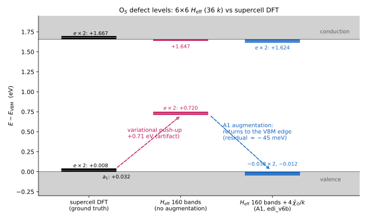
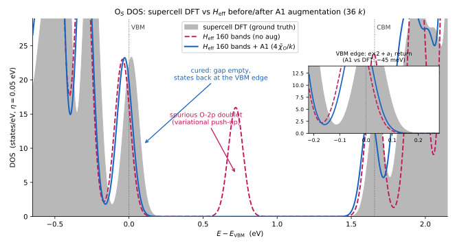
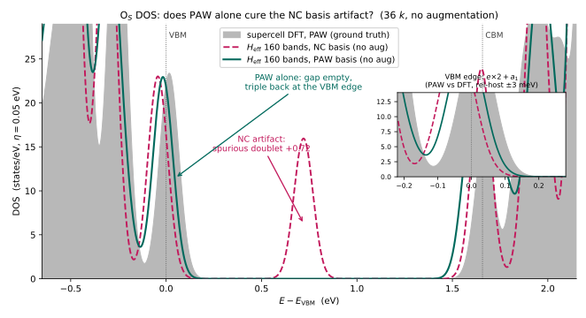
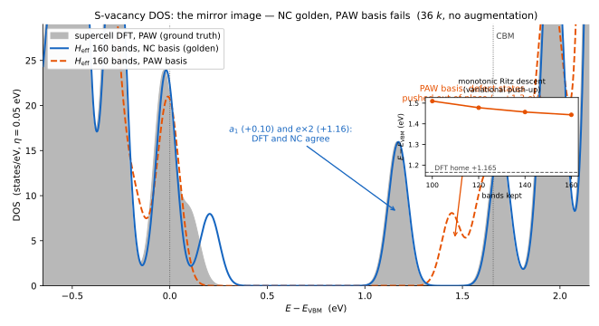
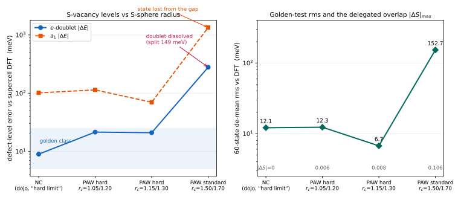
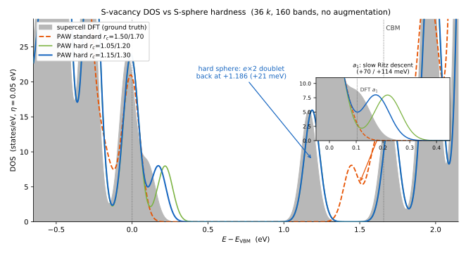
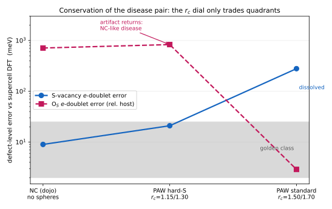
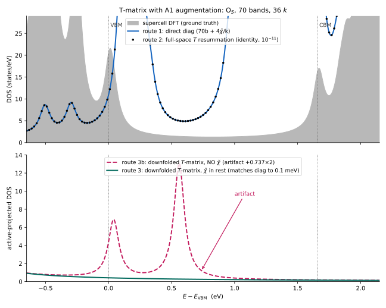

1 · The problem: a variational push-up for new-element defects
The effective defect Hamiltonian used throughout this site is the pristine-Bloch-basis matrix
with $\Delta V=V_{\rm defect}-V_{\rm pristine}$ the supercell defect potential and $1/N_k$ the BZ measure. Its eigenvalues are the defect levels of the $N_k$-cell supercell, restricted to the span of the kept pristine bands $\{\psi_{nk}:n\le N_b\}$. For the S vacancy this restriction is harmless (golden test: rms 7.6 meV over 125 states). For O$_S$ it is not: the defect introduces O-2p character that does not exist anywhere in the O-free pristine spectrum at low energy.
Write the true (supercell) defect state as $|\varphi_d\rangle=\sqrt{1-w}\,|\varphi_\parallel\rangle+\sqrt{w}\,|\varphi_\perp\rangle$, with $|\varphi_\parallel\rangle$ inside the kept span $P$ and $|\varphi_\perp\rangle=(1-P)|\varphi_d\rangle/\sqrt{w}$ the missing tail. Rayleigh–Ritz in the truncated basis then lifts the level by approximately
the product of the missing weight and the mean energy of the missing components. For the O$_S$ $e$-doublet the supercell wavefunctions give $w\approx5\times10^{-4}$ (99.95% of the state is representable!) while the O-2p near-core tail lives at $\bar E_\perp\sim10^2$–$10^3$ eV — hence the observed $+0.71$ eV artifact from an innocuously small weight. This "small weight × huge energy" mechanism also explains the pathologically slow convergence with band number ($70\to160$ bands moved the doublet by only 19 meV).
2 · Augmenting with answer states (A2) is a diagnosis, not a cure
A first check (zero new integrals): augment $H_{\rm eff}$ with a few supercell defect eigenstates $|\phi_i\rangle$. Because they are eigenstates of the defect Hamiltonian $H_d$, every new matrix element reduces to overlaps,
computable from the wavefunction files alone. Result: the three DFT levels return exactly ($+0.0079\times2,\ +0.0319$) — proving the machinery and the push-up diagnosis — but a second-layer pseudo-doublet appears at $+0.97$: the next family of states is now the most-truncated one, and peeling that layer surfaces another ($+0.62$, $+1.60$, …). One is chasing answers, one family at a time. The SVD of the missing tails, however, showed they span only $\sim$9–16 independent directions — a space generated by a few atomic orbitals. The cure is therefore to augment the generators, not the answers.
3 · The A1 construction
3.1 Bloch sums of the new element's pseudo-atomic orbitals
Let $\chi_{l m}(\mathbf r)$ be the pseudo-atomic orbitals stored in the O pseudopotential (PP_PSWFC: 2s + 2p $\Rightarrow$ $n_\chi=4$ orbitals; pseudo-dojo ships them, SG15 does not). Place them at the defect site $\boldsymbol\tau$ (the substituted-S position, folded into the primitive cell) and Bloch-sum on the same $k$-grid as the bands. In plane waves,
with $\tilde\chi_l(q)$ the radial Fourier–Bessel transform (QE's tab_at interpolation table). This is the standard atomic_wfc construction, evaluated with a private single-site structure factor so the ghost species carries no atoms in the primitive cell.
3.2 Projection and Löwdin orthonormalization
Only the part of $\chi$ outside the kept bands is new information. Per $k$-point, project and orthonormalize:
The Gram eigenvalues $e_a=\lVert(1-P)\chi\rVert^2$ along each principal direction measure how much of the atomic orbital the band basis was missing; directions with $e_a<{\tt aug\_tol}$ would be discarded (none are here: at 160 bands $e_a\in[0.155,0.166]$ — each O orbital is $\sim$84% representable, and the missing 16% is exactly the tail responsible for the push-up). The $\tilde\chi$ are then appended to the basis as $n_\chi$ extra "bands" per $k$: the extended basis is $\{\psi_{nk}\}_{n\le N_b}\oplus\{\tilde\chi^k_a\}_{a\le n_\chi}$, orthonormal by construction.
3.3 Block structure of the augmented $H_{\rm eff}$
With $H=H_p+\Delta V$ ($H_p$ = pristine primitive-cell Hamiltonian), the augmented effective Hamiltonian is
Three exact statements organize the blocks:
- The $\psi$–$\tilde\chi$ block of $H_p$ vanishes identically. The kept $\psi_{nk}$ are eigenstates of $H_p$, so $\langle\psi_{nk}|H_p|\tilde\chi^{k'}_a\rangle=\varepsilon_{nk}\langle\psi_{nk}|\tilde\chi^{k'}_a\rangle=0$ by the orthogonalization of §3.2 (and by $k$-conservation for $k\neq k'$). Only $\Delta V$ couples the two sectors.
- The $H_p$ block inside the $\tilde\chi$ sector is $k$-diagonal: $H_p$ is primitive-periodic, so $\langle\tilde\chi^k_a|H_p|\tilde\chi^{k'}_b\rangle=h^p_{ab}(k)\,\delta_{kk'}$.
- All $\Delta V$ blocks come from the unchanged EDI direct engine. The $\tilde\chi$ are simply extra band columns: $M^{\psi\chi},M^{\chi\chi}$ are computed by the same local-fold + KB-projector code and carry the same $1/N_k$ measure that the golden test validated for $M^{\psi\psi}$.
3.4 The $\tilde\chi$ diagonal block $h^p_{ab}(k)$ — and the supercell-replica identities
$h^p=\langle\tilde\chi_a|T+V^{\rm loc}_p+V^{\rm NL}_p|\tilde\chi_b\rangle$ is assembled from three pieces:
while the potential pieces are only available on the supercell (the same cube files that define $\Delta V$). Both reduce exactly to primitive quantities because $V_p$ is primitive-periodic and $\tilde\chi$ is a primitive Bloch state:
because at $k_i=k_f$ every one of the $N_{\rm sc}$ primitive replicas $\mathbf R$ of a projector contributes identically (the Bloch phases $e^{i\mathbf k\cdot\mathbf R}$ cancel between bra and ket). Hence the supercell KB sum must be divided by $N_{\rm sc}$ — this is exact, not an approximation. Omitting this division was caught by a physical invariant: for any normalized state $\langle T\rangle\le E_{\rm cut}$, so a diagonal $h^p\sim370$ Ry against $E_{\rm cut}=100$ Ry is impossible (see §4).
4 · Implementation in EDI (edi_v6b.x) and two pitfalls
New namelist switches in edinput_nml; everything else (cubes, $k$-lists, band window, ghost species) is unchanged:
| Input | Meaning |
|---|---|
aug_orbitals = .true. | enable A1 augmentation |
aug_type = 3 | primitive species index of the new element (the ghost species; its upf must contain PP_PSWFC — pseudo-dojo yes, SG15 no) |
aug_tol = 1e-6 | discard $(1-P)\chi$ Gram directions with $e_a<{\tt aug\_tol}$ |
Outputs: the edmat binary gains a naug header field (version 20260702; band dimension $N_b+n_\chi$ with the $\tilde\chi$ appended after the kept bands), plus a new <prefix>_aug_hp.bin carrying $h^p_{ab}(k)$ (complex128, Ry). Cost is negligible: the O$_S$ production run (36×36 $k$, 160+4 bands, 4 nodes × 36 ranks) took 5:47 wall, ~145 GB/node. With aug_orbitals=.false. the binary reproduces the previous version bitwise.
Two implementation pitfalls worth recording.
(i) Broadcast your namelist. The first build broadcast the new flags along an input path the direct-mode driver never calls, so naug was 4 on the ionode and 0 everywhere else — a rank-dependent buffer size that deadlocked a 144-rank job at an MPI_Bcast (and, on shared memory, surfaced as MPI_ERR_TRUNCATE). Milestone prints come from the ionode only and prove nothing about other ranks.
(ii) Assert physical invariants. The supercell KB replica overcount (missing $1/N_{\rm sc}$ of §3.4) inflated $h^p$ diagonals to 147–370 Ry — flatly impossible against $\langle T\rangle\le E_{\rm cut}=100$ Ry for a normalized state. The bound both exposed the bug and certified the fix ($h^p\to9.5$–$10.5$ Ry). With the inflated $h^p$ the augmentation was silently ineffective (energy denominators $\sim$5000 eV instead of $\sim$140 eV): the artifact moved by only 13 meV, vs the full cure after the fix.
5 · Results: the O$_S$ artifact is cured
Augmented $H_{\rm eff}$ on the 6×6-commensurate $k$-subgrid (36 $k$, bands 1–160 + 4 $\tilde\chi$/k, $N=5904$; $\max|H-H^\dagger|=1.7\times10^{-14}$ eV), against the supercell-DFT ground truth and the unaugmented basis:

| Level | supercell DFT | $H_{\rm eff}$ 160b (no aug) | $H_{\rm eff}$ 160b + A1 | error before → after |
|---|---|---|---|---|
| O-2p $e$-doublet | $+0.0079\times2$ | $+0.7199\times2$ | $-0.0377\times2$ | $+712\ \text{meV}\;\rightarrow\;-46$ meV |
| $a_1$ | $+0.0319$ | — (buried) | $-0.0121$ | → $-44$ meV |
| CBM-edge $e$-doublet | $+1.6672\times2$ | $+1.6469$ | $+1.6240\times2$ | degeneracy restored; $-43$ meV |
| mid-gap ($+0.05\ldots1.65$) | empty | spurious doublet at $+0.72$ | empty | artifact cured |
DOS comparison

The $-45$ meV is common-mode, not an A1 error. The host valence six-pack just below the VBM sits at $-0.257$ eV in DFT and $-0.301$ eV in the augmented $H_{\rm eff}$ ($-44.3$ meV) — and it is offset by $-49$ to $-72$ meV in the unaugmented spectrum too, so the shift originates in the comparison itself (deep-state alignment convention of the defect-supercell spectrum plus residual basis compression), not in the augmentation. Measured relative to the host manifold, the defect levels are essentially exact:
| Level (rel. host six-pack) | supercell DFT | $H_{\rm eff}$ + A1 | difference |
|---|---|---|---|
| O-2p $e$-doublet | $+0.2645$ | $+0.2632$ | $-1.4$ meV |
| $a_1$ | $+0.2885$ | $+0.2887$ | $+0.2$ meV |
| CBM-edge $e$-doublet | $+1.9244$ | $+1.9248$ | $+0.5$ meV |
Mechanism numbers
Scope. (i) The replica identity for $V^{\rm NL}$ holds at $k_i=k_f$, exactly where $h^p$ is needed; the $\Delta V$ blocks at $k_i\neq k_f$ are unaffected (they use the difference of defect and pristine KB sums, as always). (ii) Collinear, norm-conserving case; the aug species' upf must ship PP_PSWFC. (iii) The S-vacancy pipeline is untouched: with aug_orbitals=.false. outputs are bitwise identical to edi_v4/v5.
6 · Route 2: PAW pseudopotentials — the artifact never forms
The push-up is an NC-basis disease, so a sharper question is whether PAW alone (no augmentation at all) avoids it: the PAW transformation $\mathcal T_d = 1+\sum_a\sum_i(|\varphi_i^a\rangle-|\tilde\varphi_i^a\rangle)\langle\tilde p_i^a|$ carries the O near-core structure in atom-centered channels, so the smooth defect state $\tilde\varphi_d$ should be representable in the smooth O-free pristine basis. The matrix-element formulas change structurally (standalone edi_paw.x, built in src_paw/):
a generalized eigenproblem: the overlap $S=1+\sum|\tilde p\rangle q\langle\tilde p|$ differs between the two systems, so a second matrix-element stream $\langle\tilde\psi|\Delta S|\tilde\psi'\rangle$ is computed alongside $M$ (here $\max|\Delta S|=0.077$ — an 8% metric effect). The nonlocal strengths are the SCF-screened, per-atom $D^{\rm scr}$ (QE's deeq, exported per system after newd/add_paw_to_deeq; the defect visibly re-screens every atom), and the local part is the smooth-grid $v_{rs}$ — exactly the operator h_psi applies. Machinery invariants: NSCF $S$-orthonormality $\max|\langle\tilde\psi|S_p|\tilde\psi\rangle-1|=2.6\times10^{-8}$; $B=I+\Delta S/N_k$ eigenvalues $[0.93,1.25]$; NC-limit run is bitwise identical to edi_v6b.x. Pseudopotentials: PSlibrary 1.0.0 kjpaw (PBE), $E_{\rm cut}=60/480$ Ry; the primitive PAW VBM ($-5.9399$ eV) sits 3.4 meV from the NC one, and the two families' supercell-DFT defect levels agree to meV.

| Level (rel. host six-pack) | supercell DFT (PAW) | $H_{\rm eff}$ PAW, no aug | difference |
|---|---|---|---|
| O-2p $e$-doublet (centroid) | $+0.2650$ | $+0.2622$ | $-2.9$ meV (split 13 meV) |
| $a_1$ | $+0.2880$ | $+0.2908$ | $+2.8$ meV |
| CBM-edge $e$-doublet | $+1.9247\times2$ | $+1.872/+1.896$ | $-30$ to $-50$ meV, split 24 meV |
| mid-gap | empty | empty | artifact never forms |
Verdict. Pure PAW cures the O$_S$ artifact to the same accuracy class as NC+A1: the defect triple lands within $\pm3$ meV of DFT relative to the host manifold (common-mode offset $-32$ meV, analogous to §5's $-45$ meV). Two equivalent routes for new-element defects, then: NC + orbital augmentation (§3–5, $\pm1.4$ meV) or switch to PAW (this section, $\pm3$ meV) — both collapse a 712 meV artifact to the meV scale. Residual PAW blemishes (13–24 meV degeneracy splittings, CBM-edge offset) are consistent with smooth-grid quadrature and the alignment constant acting on the local part only. Scope caveat: this route is specific to the defect type — for the vacancy the roles invert exactly (§7).
7 · The mirror image: PAW fails for the vacancy — basis/defect complementarity
A regression of the PAW pipeline on the S-vacancy — the system where the NC machinery is golden (rms 7.6 meV over 125 states) — produces the opposite of §6. The PAW supercell DFT side is perfect (a$_1$ at $+0.1031$, $e$-doublet at $+1.1647{\times}2$, matching the NC ground truth to 3 meV). The PAW $H_{\rm eff}$ is not: no localized state appears anywhere near the DFT homes; the only localized eigenvector sits at $+1.44$, i.e. the vacancy levels are pushed up by $\sim$1.3 eV — worse than the O$_S$/NC artifact of §1.

Three checks pin the cause. (i) Setting $B=I$ (dropping $\Delta S$) moves the levels by only $\sim$30 meV — not the metric. (ii) The identical code produced the $\pm$3 meV O$_S$ result of §6, and the $S$-orthonormality invariant reads $2.6\times10^{-8}$ here too — not the machinery. (iii) The band-count test above shows clean monotonic descent — a representability failure of the basis, exactly like §1.
Mechanism. Pristine PAW smooth wavefunctions are pseudized through the S augmentation sphere: their short-range structure at the site is deliberately removed and delegated to the one-center channels. The vacancy removes that sphere, and the defect's dangling-bond states need genuine structure exactly there — content the truncated smooth pristine basis cannot span at any modest band count. The NC basis (hard, 100 Ry, full structure everywhere) is immune, which is why it is golden for the vacancy. This is the precise mirror image of §1, where the NC basis lacked the O near-core content that PAW carries in its (swapped, not removed) sphere.
| Defect type | NC basis (160 bands) | PAW smooth basis (160 bands) |
|---|---|---|
| S vacancy (sphere removed) | golden: rms 7.6 meV; doublet degenerate to 0.1 meV | fails: levels pushed $\sim$+1.3 eV, still descending at 160 bands |
| O$_S$ substitution (sphere swapped) | fails: doublet pushed $+0.72$ eV (§1) — cured by A1 (§5) | works: $\pm$3 meV rel. host (§6) |
Practical rule. The basis must keep its bookkeeping compatible with the defect: vacancies → NC basis (or NC+A1); new-element substitutions → PAW or NC+A1. The two routes are complementary, not redundant — each is exact precisely where the other fails. The natural PAW-side cure, symmetric to A1, is to augment the smooth basis with the removed atom's orbitals at the vacancy site in the $S_p$ metric (not yet implemented; edi_paw.x guards PAW+A1 with an explicit error).
7.1 Quantitative test: shrink the S sphere and the disease dies
The mechanism makes a falsifiable prediction: the vacancy artifact should scale with how much content the S sphere delegates. We generated hardened S PAW datasets by extracting the ld1 recipe embedded in the pslibrary UPF and shrinking only the matching radii ($r_c^{NC}/r_c^{US}$ = 1.15/1.30 and 1.05/1.20 vs the standard 1.50/1.70; below $\approx$1.05 the PAW construction fails), then reran the full pipeline per dataset at $E_{\rm cut}=90$ Ry (identical FFT grids across datasets). Every dataset passes the quality gate — its own supercell DFT reproduces the known vacancy levels to sub-meV — so all differences below are pure basis effects.

| NC (dojo) | hard $r_c$=1.05/1.20 | hard $r_c$=1.15/1.30 | standard 1.50/1.70 | |
|---|---|---|---|---|
| $e$-doublet error / degeneracy | $+9$ meV / exact | $+22$ meV / 0.1 meV | $+21$ meV / 0.1 meV | dissolved (split 149 meV, $\ge+279$ meV) |
| $a_1$ error | $+101$ meV† | $+114$ meV† | $+70$ meV† | expelled ($\gtrsim+1.3$ eV) |
| 60-state rms (de-mean) | 12.1 meV | 12.3 meV | 6.7 meV | 153 meV |
| $|\Delta S|_{\max}$ (delegated overlap) | 0 (exact) | 0.006 | 0.008 | 0.106 |
† the $a_1$ converges slowly from above in every basis (genuine Ritz behavior, cf. §4 of the results page); the $\pm$40 meV spread between datasets at fixed 160 bands reflects basis detail, not the vacancy disease. Methodological note: an intermediate run whose NSCF used QE's automatic $k$-grid produced states below their DFT homes — a violation of Ritz interlacing that flagged (and localized) a $k$-label $e^{i\mathbf G\cdot\mathbf r}$ phase inconsistency between the $\pm0.5$ zone-boundary conventions; EDI direct mode requires the explicit $[0,1)$ crystal $k$-list. Interlacing is a data-integrity assertion: truncation can only push levels up.

Conclusion (vacancy quadrant). Hardening the removed atom's sphere converts PAW from catastrophic to golden-class for the vacancy — at the price of NC-class cutoffs (90 Ry), which is the trade the mechanism predicts: the less the sphere hides, the less a vacancy can break. Whether this buys a "both-quadrants" pseudopotential is tested next — and the answer is no.
7.2 The other quadrant strikes back: hard-S re-breaks O$_S$
Completeness demands the complementary test: run O$_S$ with the hard-S dataset (standard O sphere untouched, same 90 Ry pipeline, pristine supercell reused). The quality gate again passes perfectly — the hard-S supercell DFT reproduces the O$_S$ truth ($+0.0089{\times}2$, $+0.0320$) — but the $H_{\rm eff}$ develops the full NC disease fingerprint: the O-2p doublet is pushed to $+0.7625{\times}2$ ($+831$ meV relative to the host manifold — slightly worse than NC's $+711$), with the VB-hybridized trio at $-0.075$ and a $-77$ meV host common-mode, exactly the pattern of §1.
The reason is that §6's substitution immunity was a compatibility, not an absolute property: with standard spheres, both the defect's smooth O-2p state and the pristine basis are soft at the site — soft-expands-in-soft, and the operators (deeq, $\Delta S$) carry the bookkeeping. Hardening S makes the pristine basis functions carry explicit hard S-3p structure at the site; the soft O-2p shape is no longer in that inventory — the NC problem, reborn inside PAW.

| $e$-doublet error | NC (dojo) | PAW hard-S 1.15/1.30 | PAW standard 1.50/1.70 |
|---|---|---|---|
| S-vacancy | $+9$ meV | $+21$ meV | dissolved ($\ge+279$ meV) |
| O$_S$ (rel. host) | $+711$ meV | $+831$ meV | $-3$ meV |
Final conclusion. The disease pair is conserved under the $r_c$ dial: sphere radius interpolates between the NC quadrant pattern and the standard-PAW quadrant pattern, trading one failure for the other, because the underlying issue — the basis's site inventory vs the defect's bookkeeping — is only relocated by pseudization choices, never resolved. The genuinely both-quadrant solutions are basis-adaptive: NC + A1 augmentation (§3–5, proven), its PAW mirror (add the removed atom's orbitals in the $S_p$ metric; unimplemented), or atom-centered basis sets which adapt by construction. Per-defect pseudopotential selection (vacancy → NC or hard-S PAW; new-element substitution → standard PAW or NC+A1) remains the zero-new-code option.
8 · The $T$-matrix inherits the cure: $\tilde\chi$ as rest-space members
Everything above diagonalized $H_{\rm eff}$ directly. The production formalism of this site is the active/rest downfolded $T$-matrix — so the remaining question is whether the augmentation survives the downfolding. Test at 70 bands (O$_S$, 36 $k$, bands 1–70 + 4 $\tilde\chi/k$), three routes on the same matrix-element streams:
with $P$ = bands 7–17, $Q$ = bands 1–6, 18–70 plus all $\tilde\chi$, and $W=M_{\rm ext}/N_k$. The $\tilde\chi$ are not $H_p$ eigenstates — they carry no scalar eigenenergy; their energy data is the $k$-diagonal $4{\times}4$ block $h^p_{ab}(k)=\langle\tilde\chi_a|H_p|\tilde\chi_b\rangle$ (eigenvalues at VBM$+113$–$133$ eV here, off/diag $\sim$5%). Two structural facts make this painless: the full-order rest fold is a matrix inverse that never needs eigenenergies (the non-diagonal $h^p$ blocks are just entries of $H_{QQ}$), and $\langle\psi_{nk}|H_p|\tilde\chi\rangle=0$ exactly (the §3.2 orthogonalization), so the unperturbed $D$ stays block-diagonal and $G_0$ costs only $36$ independent $4{\times}4$ eigendecompositions.

| Route | Result | Verdict |
|---|---|---|
| ① direct diag, 70b$+4\tilde\chi$ | gap empty; VBM edge $-0.0375{\times}2$, $-0.0119$ | cure at 70 bands $\simeq$ 160 bands |
| ② full-space $T$ resummation | matches ① to $1.9{\times}10^{-11}$ states/eV | machinery identity exact |
| ③ downfolded $T$, $\tilde\chi$ in rest ($\omega_0$=VBM, static) | levels match ① to 0.1 meV; doublet degeneracy exact | the cure survives downfolding |
| ③b same, $\tilde\chi$ removed | artifact doublet $+0.7367{\times}2$ | no-aug control |